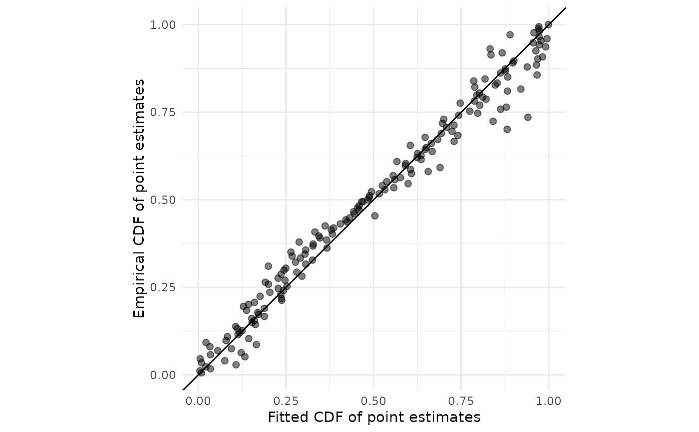

Diagnostic quantile-quantile plot for a right-truncated meta-analysis
Source:R/diagnostics.R
rtma_qqplot.RdTo assess the fit of right-truncated meta-analysis and possible violations of its distributional assumptions, plots the fitted cumulative distribution function (CDF) of the published nonaffirmative estimates versus their empirical CDF. If the points do not adhere fairly closely to a 45-degree line, the right-truncated meta-analysis may not fit adequately.
Arguments
- rtma
Output of
phacking_meta().
Examples
# \donttest{
money_priming_rtma <- phacking_meta(money_priming_meta$yi,
money_priming_meta$vi,
parallelize = FALSE)
#>
#> SAMPLING FOR MODEL 'phacking_rtma' NOW (CHAIN 1).
#> Chain 1:
#> Chain 1: Gradient evaluation took 0.000377 seconds
#> Chain 1: 1000 transitions using 10 leapfrog steps per transition would take 3.77 seconds.
#> Chain 1: Adjust your expectations accordingly!
#> Chain 1:
#> Chain 1:
#> Chain 1: Iteration: 1 / 2000 [ 0%] (Warmup)
#> Chain 1: Iteration: 200 / 2000 [ 10%] (Warmup)
#> Chain 1: Iteration: 400 / 2000 [ 20%] (Warmup)
#> Chain 1: Iteration: 600 / 2000 [ 30%] (Warmup)
#> Chain 1: Iteration: 800 / 2000 [ 40%] (Warmup)
#> Chain 1: Iteration: 1000 / 2000 [ 50%] (Warmup)
#> Chain 1: Iteration: 1001 / 2000 [ 50%] (Sampling)
#> Chain 1: Iteration: 1200 / 2000 [ 60%] (Sampling)
#> Chain 1: Iteration: 1400 / 2000 [ 70%] (Sampling)
#> Chain 1: Iteration: 1600 / 2000 [ 80%] (Sampling)
#> Chain 1: Iteration: 1800 / 2000 [ 90%] (Sampling)
#> Chain 1: Iteration: 2000 / 2000 [100%] (Sampling)
#> Chain 1:
#> Chain 1: Elapsed Time: 4.643 seconds (Warm-up)
#> Chain 1: 3.784 seconds (Sampling)
#> Chain 1: 8.427 seconds (Total)
#> Chain 1:
#>
#> SAMPLING FOR MODEL 'phacking_rtma' NOW (CHAIN 2).
#> Chain 2:
#> Chain 2: Gradient evaluation took 0.000341 seconds
#> Chain 2: 1000 transitions using 10 leapfrog steps per transition would take 3.41 seconds.
#> Chain 2: Adjust your expectations accordingly!
#> Chain 2:
#> Chain 2:
#> Chain 2: Iteration: 1 / 2000 [ 0%] (Warmup)
#> Chain 2: Iteration: 200 / 2000 [ 10%] (Warmup)
#> Chain 2: Iteration: 400 / 2000 [ 20%] (Warmup)
#> Chain 2: Iteration: 600 / 2000 [ 30%] (Warmup)
#> Chain 2: Iteration: 800 / 2000 [ 40%] (Warmup)
#> Chain 2: Iteration: 1000 / 2000 [ 50%] (Warmup)
#> Chain 2: Iteration: 1001 / 2000 [ 50%] (Sampling)
#> Chain 2: Iteration: 1200 / 2000 [ 60%] (Sampling)
#> Chain 2: Iteration: 1400 / 2000 [ 70%] (Sampling)
#> Chain 2: Iteration: 1600 / 2000 [ 80%] (Sampling)
#> Chain 2: Iteration: 1800 / 2000 [ 90%] (Sampling)
#> Chain 2: Iteration: 2000 / 2000 [100%] (Sampling)
#> Chain 2:
#> Chain 2: Elapsed Time: 4.264 seconds (Warm-up)
#> Chain 2: 3.47 seconds (Sampling)
#> Chain 2: 7.734 seconds (Total)
#> Chain 2:
#>
#> SAMPLING FOR MODEL 'phacking_rtma' NOW (CHAIN 3).
#> Chain 3:
#> Chain 3: Gradient evaluation took 0.00034 seconds
#> Chain 3: 1000 transitions using 10 leapfrog steps per transition would take 3.4 seconds.
#> Chain 3: Adjust your expectations accordingly!
#> Chain 3:
#> Chain 3:
#> Chain 3: Iteration: 1 / 2000 [ 0%] (Warmup)
#> Chain 3: Iteration: 200 / 2000 [ 10%] (Warmup)
#> Chain 3: Iteration: 400 / 2000 [ 20%] (Warmup)
#> Chain 3: Iteration: 600 / 2000 [ 30%] (Warmup)
#> Chain 3: Iteration: 800 / 2000 [ 40%] (Warmup)
#> Chain 3: Iteration: 1000 / 2000 [ 50%] (Warmup)
#> Chain 3: Iteration: 1001 / 2000 [ 50%] (Sampling)
#> Chain 3: Iteration: 1200 / 2000 [ 60%] (Sampling)
#> Chain 3: Iteration: 1400 / 2000 [ 70%] (Sampling)
#> Chain 3: Iteration: 1600 / 2000 [ 80%] (Sampling)
#> Chain 3: Iteration: 1800 / 2000 [ 90%] (Sampling)
#> Chain 3: Iteration: 2000 / 2000 [100%] (Sampling)
#> Chain 3:
#> Chain 3: Elapsed Time: 4.539 seconds (Warm-up)
#> Chain 3: 3.151 seconds (Sampling)
#> Chain 3: 7.69 seconds (Total)
#> Chain 3:
#>
#> SAMPLING FOR MODEL 'phacking_rtma' NOW (CHAIN 4).
#> Chain 4:
#> Chain 4: Gradient evaluation took 0.000342 seconds
#> Chain 4: 1000 transitions using 10 leapfrog steps per transition would take 3.42 seconds.
#> Chain 4: Adjust your expectations accordingly!
#> Chain 4:
#> Chain 4:
#> Chain 4: Iteration: 1 / 2000 [ 0%] (Warmup)
#> Chain 4: Iteration: 200 / 2000 [ 10%] (Warmup)
#> Chain 4: Iteration: 400 / 2000 [ 20%] (Warmup)
#> Chain 4: Iteration: 600 / 2000 [ 30%] (Warmup)
#> Chain 4: Iteration: 800 / 2000 [ 40%] (Warmup)
#> Chain 4: Iteration: 1000 / 2000 [ 50%] (Warmup)
#> Chain 4: Iteration: 1001 / 2000 [ 50%] (Sampling)
#> Chain 4: Iteration: 1200 / 2000 [ 60%] (Sampling)
#> Chain 4: Iteration: 1400 / 2000 [ 70%] (Sampling)
#> Chain 4: Iteration: 1600 / 2000 [ 80%] (Sampling)
#> Chain 4: Iteration: 1800 / 2000 [ 90%] (Sampling)
#> Chain 4: Iteration: 2000 / 2000 [100%] (Sampling)
#> Chain 4:
#> Chain 4: Elapsed Time: 4.2 seconds (Warm-up)
#> Chain 4: 3.484 seconds (Sampling)
#> Chain 4: 7.684 seconds (Total)
#> Chain 4:
rtma_qqplot(money_priming_rtma)

# }